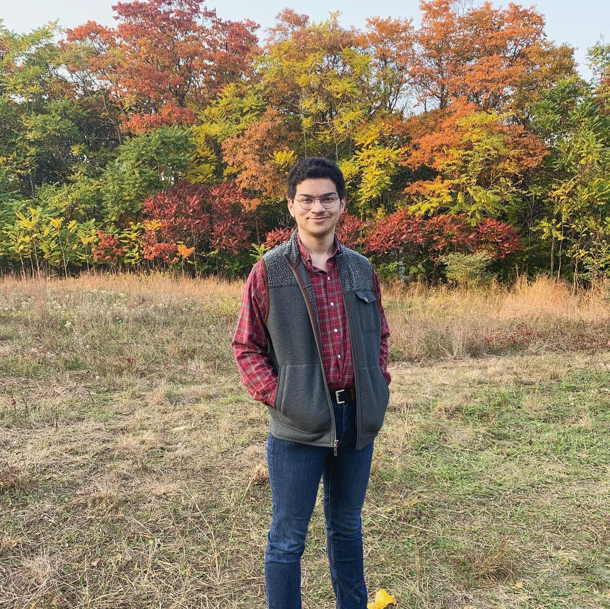

About Me

Hello! I am Isaac Houston, a Media and Information student at Michigan State University. I am also minoring in the Game Design and Development
program offered at MSU, and am primarily focused on becoming a versatile and well-rounded game designer. I am currently a Senior, and am set to graduate after Spring semester
of 2021. This portfolio website is designed by myself for my MI349 final project.
Some of my hobbies include woodworking, playing tennis, writing, playing the accordion and piano, and (as expected) game development.
Note: This website does not contain all of my projects, and is purely designed for being my MI-349 final project submission.